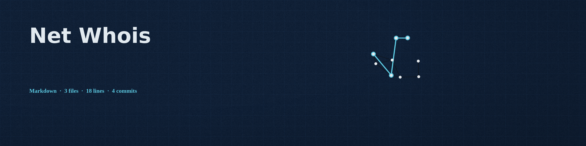
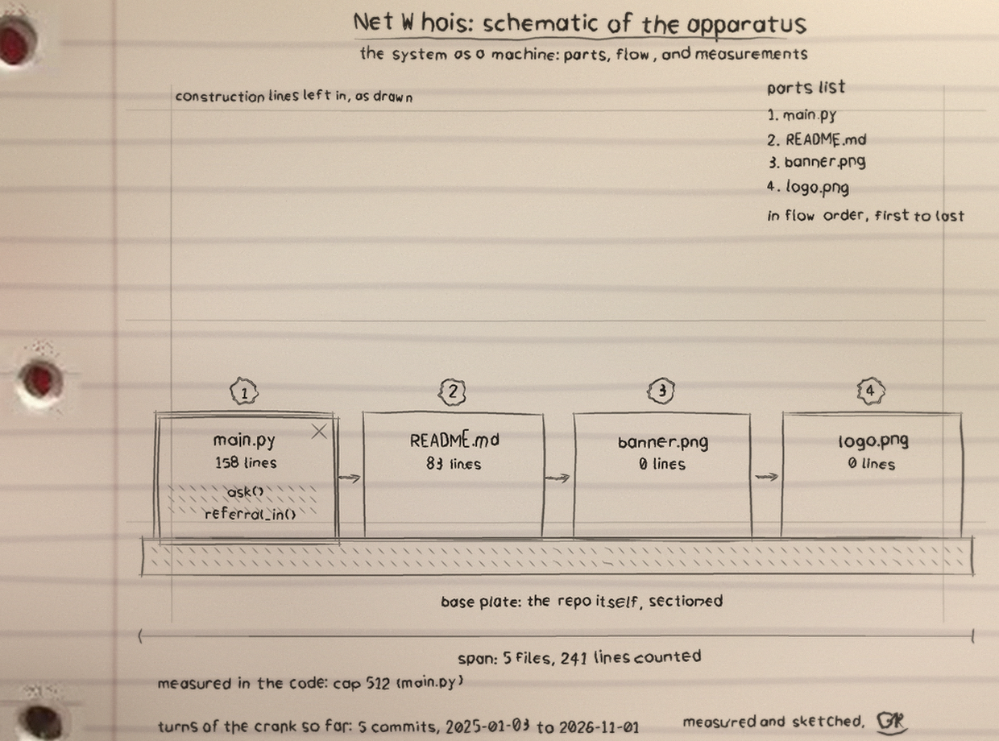

Ask a registry about a domain or an IP address, the way it has worked since 1985: one connection to port 43, one question, and the record in the registry's own words.
You name it. A domain or an IPv4 address, nothing fancier. WHOIS never had a form to fill in.
I pick the counter. A registry I know for common TLDs, or IANA for everything else, whose answer points onward.
The record comes back. Thin registries point at the registrar's server, so I follow once more and bring the full card.
The chain of servers asked is printed on stderr, so the record itself stays clean. Three servers is the limit of the walk.
| TLD | First server asked |
|---|---|
| com, net | whois.verisign-grs.com |
| org | whois.pir.org |
| info | whois.identity.digital |
| io | whois.nic.io |
| uk | whois.nic.uk |
| de | whois.denic.de |
| edu | whois.educause.edu |
| anything else, and IPs | whois.iana.org, then follow the referral |
The tool's tests run against a fake WHOIS server on loopback, never the live network. This is the full record that server hands back after the thin answer points at it:
And the walk that produced it, exactly as printed:
servers asked: 127.0.0.1 -> 127.0.0.1. On the live
network the two stops are different hosts; at the test counter
they share one desk.
python3 main.py example.com python3 main.py 192.0.2.1 --json python3 main.py example.org --no-referral
Python 3, standard library only. A failed connection or an empty answer exits non-zero: nothing retrieved is never reported as success. Full documentation: the repository.
